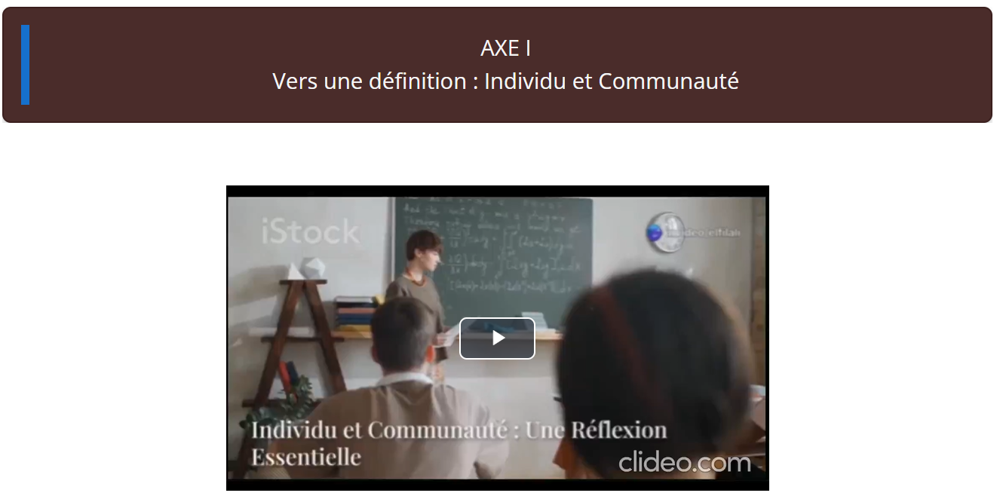

Le thème est introduit par une vidéo personnalisée, suivie de deux activités interactives H5P.

Figure 6: Axe I – Introduction avec une vidéo. Explication : La vidéo introduit les concepts d’Individu et Communauté. Commentaire : Cet outil engage les étudiants via une approche visuelle et auditive.
Figure 7: Activité 1 – Dialog Cards (H5P). Explication : Les cartes interactives explorent les définitions. Commentaire : Favorise un apprentissage actif et mémorisation des concepts.Figure 8: Activité 2 – Find the Words (H5P). Explication : Les étudiants recherchent des mots clés dans une grille. Commentaire : Activité ludique pour renforcer la mémorisation.